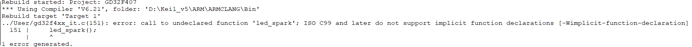
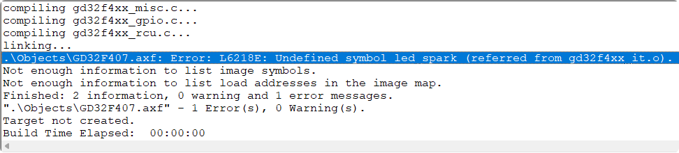
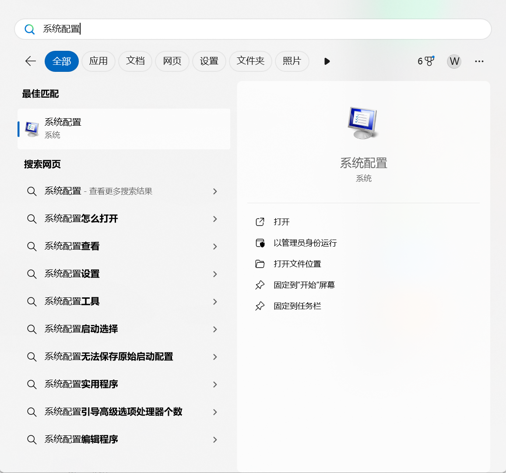
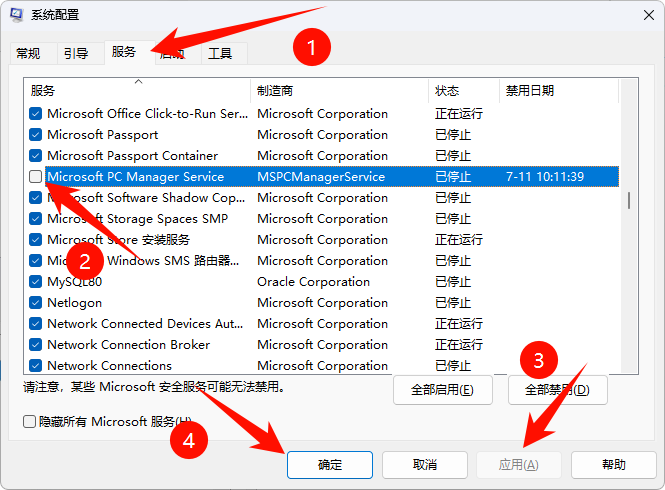

<!DOCTYPE lake>
<h2 data-lake-id="ttDl2" id="ttDl2"><span data-lake-id="uf9a20a12" id="uf9a20a12">常见报错及解决</span></h2><h3 data-lake-id="suawn" id="suawn"><span data-lake-id="u1e6d90aa" id="u1e6d90aa">call to undeclared function</span></h3><p data-lake-id="ua544a48e" id="ua544a48e"><span data-lake-id="u57662b88" id="u57662b88">调用的函数没有声明</span></p><p data-lake-id="u4cbd60d8" id="u4cbd60d8"></p><p data-lake-id="u58fb78ac" id="u58fb78ac"><span data-lake-id="uef7d368b" id="uef7d368b">通常在头文件里声明:</span></p><span class="yuque-card-unsupported">[codeblock]</span><h3 data-lake-id="fT1UO" id="fT1UO"><span data-lake-id="ud8db2d2b" id="ud8db2d2b">Undefined symbol xxxx</span></h3><p data-lake-id="u498ba1b2" id="u498ba1b2"><span data-lake-id="u300bc930" id="u300bc930">调用的函数没有定义</span></p><p data-lake-id="u8c52b6fb" id="u8c52b6fb"></p><p data-lake-id="ue3364bc6" id="ue3364bc6"><span data-lake-id="u6b165bcd" id="u6b165bcd">通常在C文件里定义</span></p><span class="yuque-card-unsupported">[codeblock]</span><h2 data-lake-id="WWm4K" id="WWm4K"><span data-lake-id="u7c770559" id="u7c770559">Keil编译过慢</span></h2><ul list="u6791e48e"><li data-lake-id="u2063d6fa" fid="u5198654b" id="u2063d6fa"><span data-lake-id="u8cbcd78f" id="u8cbcd78f">原因：MSPCManager Service占用CPU过多</span></li><li data-lake-id="ub5b52a11" fid="u5198654b" id="ub5b52a11"><span data-lake-id="u19a116c9" id="u19a116c9">解决：</span></li></ul><h3 data-lake-id="F4yED" data-lake-index-type="0" id="F4yED"><span data-lake-id="ucf1903b4" id="ucf1903b4">打开系统配置</span></h3><p data-lake-id="ue7da0e4d" id="ue7da0e4d"></p><h3 data-lake-id="OLUrv" data-lake-index-type="0" id="OLUrv"><span data-lake-id="u96e22de8" id="u96e22de8">取消勾选</span></h3><ul list="udfa5d236"><li data-lake-id="ua2778568" fid="ub7df2322" id="ua2778568"><span data-lake-id="ub35b6053" id="ub35b6053">① 进入【服务】</span></li><li data-lake-id="u868128ce" fid="ub7df2322" id="u868128ce"><span data-lake-id="u32c7b022" id="u32c7b022">② 取消勾选【Microsoft PC Manager Service】</span></li><li data-lake-id="u902f2153" fid="ub7df2322" id="u902f2153"><span data-lake-id="udbe2fda3" id="udbe2fda3">③ 点击【应用】</span></li><li data-lake-id="u20412c4a" fid="ub7df2322" id="u20412c4a"><span data-lake-id="u4a2bcbcd" id="u4a2bcbcd">④ 点击【确定】</span></li></ul><p data-lake-id="u83c343f8" id="u83c343f8"></p><h3 data-lake-id="zwTr6" data-lake-index-type="0" id="zwTr6"><span data-lake-id="u5057e076" id="u5057e076">重启电脑</span></h3><p data-lake-id="u4fc45403" id="u4fc45403"><span data-lake-id="ua05f4363" id="ua05f4363">以后这个服务就再也不会影响编译了</span></p><p data-lake-id="u602c1b26" id="u602c1b26"><span data-lake-id="u887468fb" id="u887468fb">​</span><br/></p><h3 data-lake-id="qSr7R" data-lake-index-type="0" id="qSr7R"><span data-lake-id="ucf171fa2" id="ucf171fa2">卸载Microsoft PC Manager</span></h3><ul list="u19904375"><li data-lake-id="u491d0ae7" fid="ufc8a5105" id="u491d0ae7" style="text-align: left"><span data-lake-id="u964acea2" id="u964acea2">在Windows11的设置中，卸载Microsoft PC Manager，中文是“微软电脑管家”。</span></li></ul>